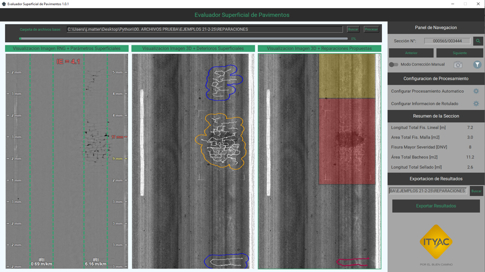
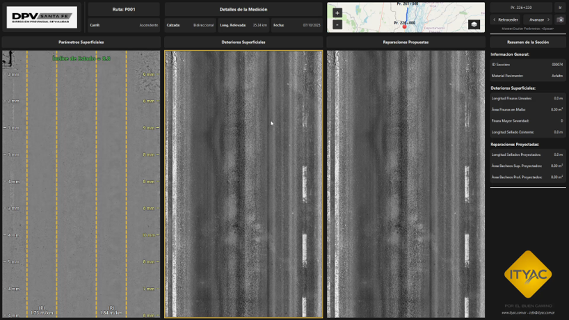

Portfolio
Desarrollos propios y en colaboración con empresas, en la intersección entre ingeniería, datos, IA y automatización.

🛣️'" />Evaluador Superficial de Pavimentos
Software con IA para analizar superficies de pavimentos, reduciendo el tiempo de análisis de 40 a 1 minuto por kilómetro. Premio Internacional España 2024.
Ver detalle →
Visualización de Datos de Pavimentos
Software visualizador con recorrido virtual de pavimentos e integración de datos para gestión eficiente de tramos viales.
Ver detalle →
🏗️'" />Presupuestador de Proyectos Industriales
Software que integra bases de datos históricas para presupuestar con precisión y analizar económicamente proyectos de construcción industrial.
Ver detalle →
Dashboard de Análisis de Compras
Tablero Power BI para análisis de compras en empresas de construcción, facilitando decisiones basadas en datos históricos.
Ver detalle →¿Cuál es tu próximo proyecto?
Transformemos juntos tus procesos de ingeniería con datos e IA. Contame tu desafío y encontremos la solución.
Hablemos →